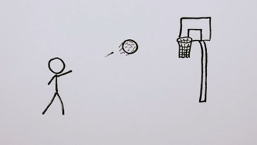

Topology is a branch of mathematics, sometimes referred to as “rubber sheet geometry,” in which two objects are considered equivalent if they can be continuously deformed into one another through such motions in space as bending, twisting, stretching, and shrinking while disallowing tearing apart or gluing together parts. The main topics of interest in topology are the properties that remain unchanged by such continuous deformations. Topology, while similar to geometry, differs from geometry in that geometrically equivalent objects often share numerically measured quantities, such as lengths or angles, while topologically equivalent objects resemble each other in a more qualitative sense.
In some cases, the objects considered in topology are ordinary objects residing in three- (or lower-) dimensional space. For example, a simple loop in a plane and the boundary edge of a square in a plane are topologically equivalent, as may be observed by imagining the loop as a rubber band that can be stretched to fit tightly around the square. On the other hand, the surface of a sphere is not topologically equivalent to a torus, the surface of a solid doughnut ring. To see this, note that any small loop lying on a fixed sphere may be continuously shrunk, while being kept on the sphere, to any arbitrarily small diameter. An object possessing this property is said to be simply connected, and the property of being simply connected is indeed a property retained under a continuous deformation. However, some loops on a torus cannot be shrunk, as shown in the figure.
Learn about the hairy ball theorem of topology. The theorem states that there is no nonvanishing continuous tangent vector field on even-dimensional n-spheres. In simple terms, it says that you cannot comb the hair flat on a hairy ball without creating a cowlick.
Many results of topology involve objects as simple as those mentioned above. The importance of topology as a branch of mathematics, however, arises from its more general consideration of objects contained in higher-dimensional spaces or even abstract objects that are sets of elements of a very general nature. To facilitate this generalization, the notion of topological equivalence must be clarified.